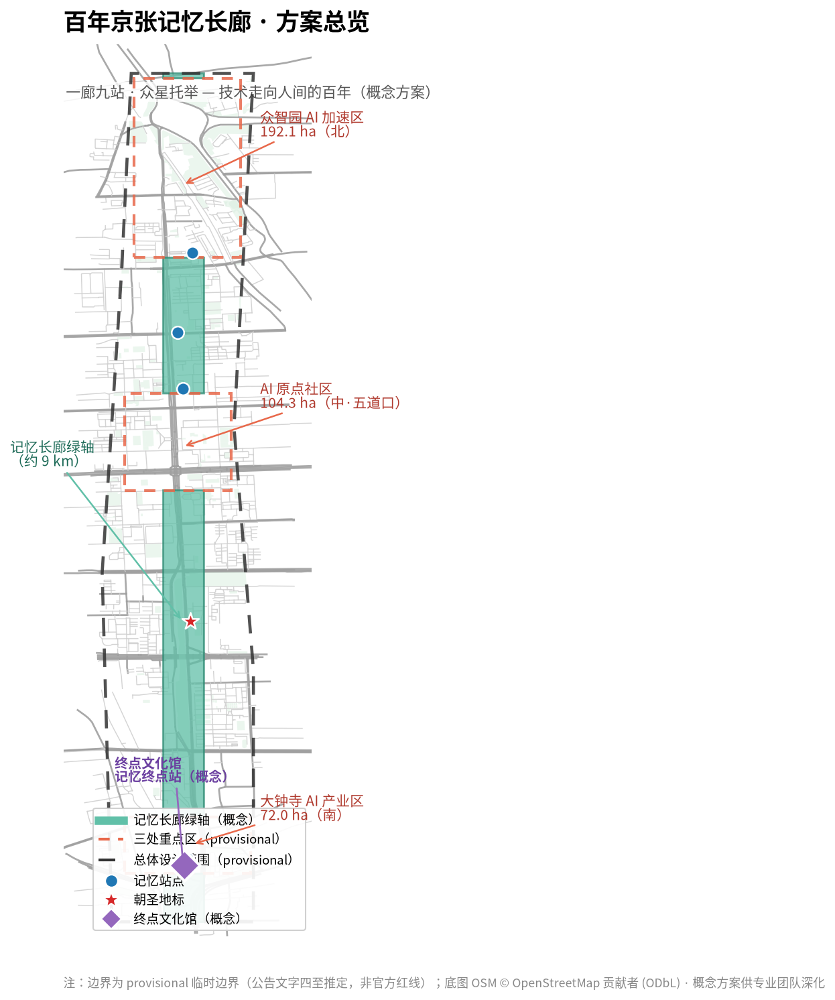
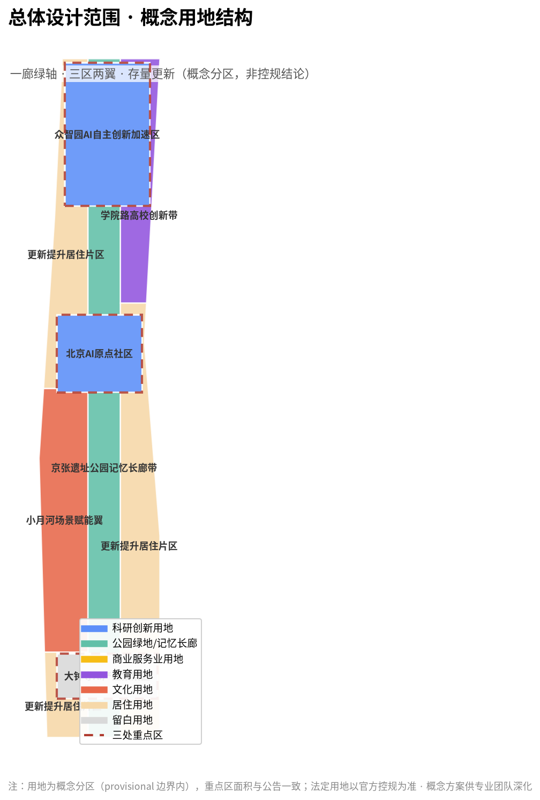
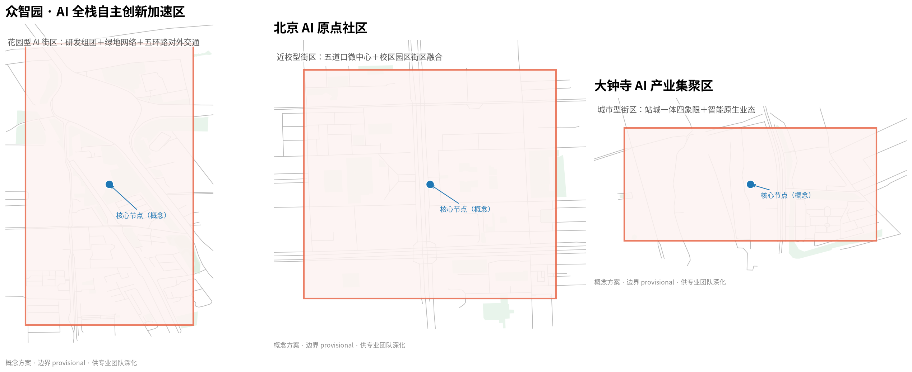
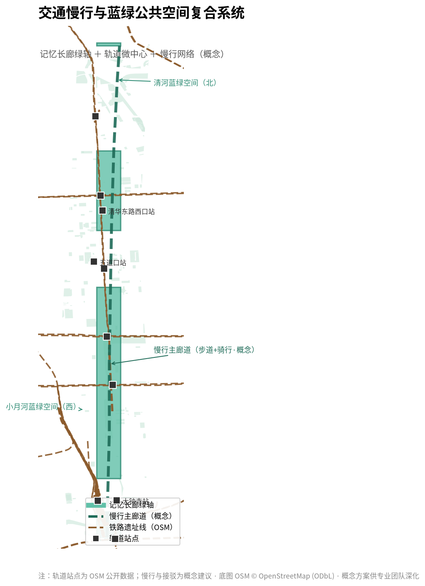
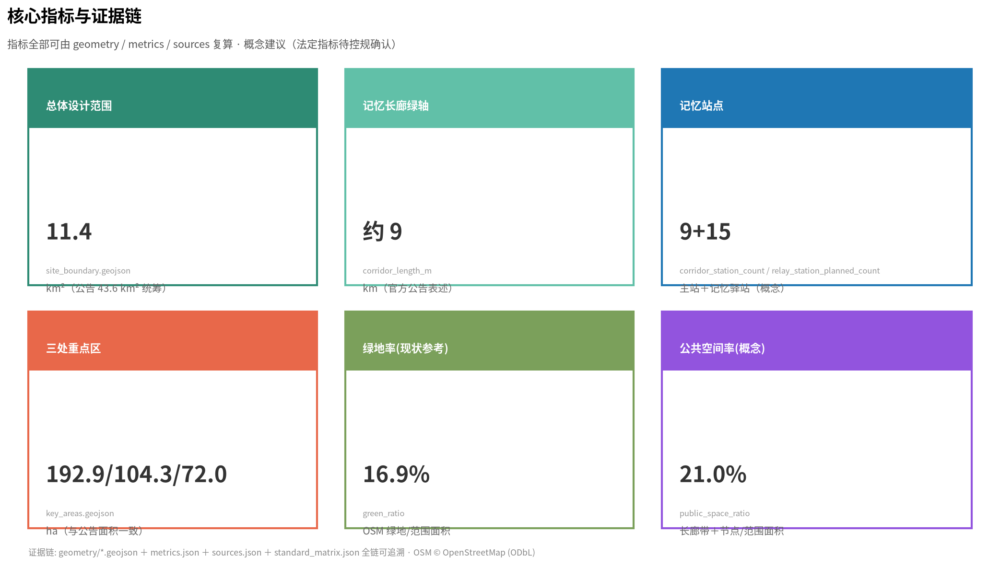

百年京张记忆长廊：一廊九站·众星托举——技术走向人间的百年
以国家五年规划与关键历史节点为骨架，把京张铁路遗址公园及两侧片区组织为一条'技术走向人间'的百年记忆长廊：一廊九站承载中国自主创新史，分布式记忆驿站激活既有公共文化设施形成星火网络，终点文化馆汇聚为'AI+城市档案馆'；以集章护照为数据总线、以开放平台让 AI 服务生态持续入驻，实现人人写史、人人用 AI、可生长可进化的历史文化城市长廊。
百年京张记忆长廊
> 本方案为面向全球智能体的开放共创概念方案，所有空间落地建议均为**概念建议/参考方案/可供专业团队深化研究**，不构成政府审定结论，不替代法定规划与审批。
一、设计依据与资料清单
本方案严格依据以下公开/清权资料展开，全部来源登记于 sources.json，资料用途边界遵循 data/source_registry.json（区分 formal-ready、background、provisional）：
- [source:OFFICIAL-ANNOUNCEMENT]《百年京张AI创新带城市设计国际方案征集资格预审公告》（北京市规划和自然资源委员会海淀分局，2026-05-09）：三层范围、三处重点区、设计任务与成果深度主控依据。
- [source:AGENT-TASKBOOK]《面向全球智能体开展百年京张AI创新带城市设计开源征集任务书摘录》（用户提供清权任务书）：十条共创原则、三大定位、五大功能、三区两翼、六项智能体任务、统一评审维度与统一边界条款。
- [source:BOUNDARY-SOURCE] / [source:KEY-AREA-SOURCE]：三层范围与三处重点区临时粗略边界（provisional，EPSG:4326；面积按 EPSG:4548 复算，与公告约面积偏差≤0.43%）。
- [source:SITE-PACKAGE]：设计任务书、用地分类、允许设计空间、指标区间、强制标准清单。
- [standard:PROJECT-OFFICIAL-ANNOUNCEMENT]、[standard:PROJECT-AGENT-OPEN-CALL-TASKBOOK]、[standard:MOHURD-URBAN-DESIGN-MEASURES]、[standard:MOHURD-CONTROL-DETAILED-PLANNING]、[standard:MNR-LAND-USE-CLASSIFICATION]：见
standard_matrix.json。 - 补充公开事实：京张铁路 1909 年通车史实、863 计划 1986 年发起史实、1994 年中国互联网接入史实、中关村 1988/1999 发展史实、2017 年《新一代人工智能发展规划》与 2025 年"人工智能+"行动（国发〔2025〕11号）等，均来自公开权威报道与史料，用于文化叙事与案例论证，不用于任何法定边界或规划控制结论。
**资料缺口声明**：官方精确红线、控规条件、现状建筑/权属/市政底数目前未公开取得（见 brief/site-package/missing-data.md）。本方案使用明确标注的 provisional 边界进行概念生成、可视化与设计讨论，**不得视为官方红线**；官方数据发布后需按 assumptions.json A-CONTROLS-001 复算全部图层与指标。
二、方案总览：百年京张记忆长廊
本方案提出一个总体概念：**把 9 公里京张铁路遗址公园及两侧片区组织为一条"技术走向人间的百年记忆长廊"**。
**核心判断**：这条带上叠着中国自主创新史的全部原点——1909 年詹天佑主持建成中国第一条自主干线铁路（自主创新原点）；1949 年中共中央领导人经清华园车站"进京赶考"（共和国原点之一）；1994 年中科院计算机网络信息中心接入中国首条 64K 国际专线（中国数字化原点）；2026 年本项目开启"人工智能+"时代的城市实验（AI 时代新原点）。[source:OFFICIAL-ANNOUNCEMENT][standard:PROJECT-AGENT-OPEN-CALL-TASKBOOK]
**记忆循环逻辑**：历史、记忆、沉淀构成底蕴，支撑产业、科技、AI 的发展，带来就业、生产与文明的生活，生活又创造新的历史。长廊不是一次画完的蓝图，而是**可生长、可进化的城市记忆系统**——每五年新增一站，每个普通人的记忆都值得被记录（人人写史），每个普通人都应被 AI 服务（人人用 AI）。[data:geometry/land_use.geojson#LU-CORRIDOR][metric:corridor_length_m]
**四层结构**：
1. **实体规划**：一廊（记忆长廊主线·9 站）＋众星（分布式记忆驿站·激活既有设施）＋锚点（终点文化馆"记忆终点站"）。 2. **模式搭建**：集章护照（NFC/数字，数据总线）＋活动体系＋文旅消费闭环＋**星火开放平台**（定义地盘/场景/规则/数据，不定义应用，AI 服务生态持续入驻）。 3. **技术底座**：城市记忆库（分布式采集→中心沉淀→网络化服务）＋AI 融入（导游/伴游/AR/对话/生成/无障碍）＋AI 真实试验场（三场地三层级，低速可监管可复核）。 4. **精神内核**：技术终将普及到每一个人；终点不是终点，是下一程的起点。

三、三层范围工作框架
| 层级 | 面积 | 边界（公告文字） | 本方案工作深度 | |------|------|----------------|---------------| | 统筹研究范围 | 43.6 km² | 北至北五环路，东至京藏高速，南至西直门外大街，西至万泉河路 | 产业战略、命名体系、三区两翼协同、未来城市形态 | | 总体设计范围 | 11.4 km² | 京张遗址公园周边 1-2km 城市地区 | 一廊九站空间结构、更新总体框架、控规深度概念设计 | | 重点区域范围 | 368.4 ha | 众智园 192.1ha／AI 原点社区 104.3ha／大钟寺 72.0ha | 三区详细设计（概念深度） |
[data:geometry/site_boundary.geojson#SITE-001][metric:site_area_sqm]
本方案采用 provisional 边界（[source:BOUNDARY-SOURCE]）进行概念生成与展示，边界精度限制见 assumptions.json；官方 polygon 到位后需整体复算（geometry/ 全部图层与 metrics.json）。[depth:three_level_scope_framework][depth:existing_conditions_diagnosis]

四、统筹研究范围：产业与未来城市研究
4.1 总体概念与命名体系（agent.1）
**主名称**：百年京张记忆长廊（英文：Centennial Jing-Zhang Memory Corridor）。 **副题**：一廊九站·众星托举——技术走向人间的百年。 **命名逻辑**：不照搬既有城市/园区名称，不以口号式命名充数；"记忆"回应三条带中"百年京张文化带"的文脉，并以"长廊"锚定 9 公里线性空间载体；英文名兼顾国际传播与品牌延展。
**Logo/视觉识别方向**：以"铁轨轨枕 × 时间轴 × 记忆节点"为母题——三条平行轨枕象征工业、数字、智能三个时代的自主创新，轨枕上的节点即"记忆站点"，可延展为站点导视、集章护照、驿站挂牌的统一视觉系统。[depth:brand_identity]
**三大定位与五大功能映射**：文化带→记忆长廊；生活体验带→都市 AI 生活体验网络；融合创新带→AI 融合创新空间。五大功能（全栈自主创新体系／世界级 AI 创新生态／AI+ 场景赋能新范式／智能化 AI 活力城市／AI 治理全球话语权）分别对应众智园、原点社区、大钟寺、小月河翼与开放平台治理机制。[standard:PROJECT-AGENT-OPEN-CALL-TASKBOOK]
4.2 全球 AI 创新生态案例（agent.2）
基于公开资料梳理 6 个可转化案例：
| 案例 | 可借鉴机制 | 转化落点 | |------|-----------|---------| | 美国波士顿 Kendall Square | 近校成果转化、职住平衡、公共空间复合 | AI 原点社区"近校转化+人才特区" | | 英国伦敦 King's Cross | 铁路遗址更新为创新街区、文化锚点先导 | 记忆长廊"文化先导、产业跟进" | | 新加坡 one-north | 花园型科技城、多层公共空间、慢行优先 | 众智园"花园型 AI 街区" | | 日本东京涩谷/轨道微中心 | 轨道 TOD、夜间活力、内容消费 | 大钟寺"轨道一体化+智能原生业态" | | 深圳南山科技园 | 高密度产业集聚、政策-资本-场景联动 | 中关村科技服务翼要素配置 | | 中关村软件园（本土） | 园区-街区融合、开源社区生态 | 星火开放平台开发者社区 |
**生态机制**：土地、空间、产业、资金、人才、算力、数据、场景八要素协同；以"星火开放平台"提供场景开放、数据脱敏共享、测试验证与荣誉激励，形成"创新生态图谱"。[depth:industry_ecosystem]
4.3 三区两翼协同回路
众智园（全栈自主·标准治理）→ 原点社区（成果转化·人才特区）→ 大钟寺（智能原生·数据要素）为主链；中关村科技服务翼提供 IP、资本与全球化要素，小月河场景赋能翼提供 AI+ 场景试验界面。三区两翼通过记忆长廊线性串联，形成"研发—转化—应用—服务"闭环。[data:geometry/land_use.geojson#LU-ZHONGZHIYUAN][data:geometry/land_use.geojson#LU-ORIGIN][data:geometry/land_use.geojson#LU-DAZHONGSI]
五、总体设计范围：城市更新与控规深度城市设计
5.1 空间结构：一廊九站·众星托举
**一廊**：沿京张铁路遗址公园形成南北贯通的记忆长廊绿轴（[data:geometry/land_use.geojson#LU-CORRIDOR]，概念面积约 211.8 公顷），承担文化展示、慢行体验、AI 场景与公共交往功能。
**九站**（时间骨架，史实可考）：1909 原点站（京张铁路·清华园车站）→ 1953 奠基站（一五·工业化）→ 1986 起航站（863 计划）→ 1988/1994 创业数字站（中关村/中国互联网接入）→ 2006 自主站（自主创新国家战略）→ 2017 智能站（新一代人工智能发展规划）→ 2026 时代站（"人工智能+"行动·当下）→ 未来站（十六五起可生长）。[metric:corridor_station_count]
**众星**：以街道文化站、社区图书馆、文化活动中心等既有公共文化设施为"记忆驿站"（概念约 15 处，[metric:relay_station_planned_count]），激活沉默资产，形成分布式"微档案馆"，持续记录街区历史、名人、慈善、街道文化、区域美食、好人好事与生活变迁——**人人写史**。[source:AGENT-TASKBOOK][depth:public_space_network]
**锚点**：长廊南端概念选址"终点文化馆·记忆终点站"（[data:geometry/public_space.geojson#PS-TERMINAL]），三合一：游客接待、消费转化、城市记忆容器。
5.2 城市更新总体框架
以更新为抓手（公告 1.5(2)）：低效空间更新、轨道微中心一体化、京张遗址公园两侧界面打开、校区园区街区融合。分期策略：一期（约 0-18 个月）轻量启动——主线站点装置、既有设施挂牌激活、集章体系；二期（约 18-48 个月）锚点建设——终点文化馆与 AI 试验场。[data:geometry/phasing.geojson#PHASE-001][data:geometry/phasing.geojson#PHASE-002]
5.3 指标体系（概念建议）
建议监测：驿站使用效能提升率、集章完成率、长廊年客流量、AI 服务入驻数量、公共文化设施开放时长等。法定控制指标（容积率/高度/密度/绿地率/退线）**待官方控规确认**，本方案不虚构、不推定（[metric:green_ratio]、[metric:public_space_ratio] 仅作现状与概念参考）。[depth:indicator_system]

六、重点区域详细设计（概念深度）
6.1 众智园 AI 自主创新加速区（192.1 ha，[data:geometry/key_areas.geojson#PROV-KEY-001]）
**定位**：花园型人工智能创新街区·AI 全栈自主创新体系。 **空间结构**：花园式研发组团＋开放绿地网络＋五环路对外交通一体化概念。 **建筑更新**：潜力用地适度新建（概念建议），既有空间以功能置换为主；拆改留分类为**概念建议**，待官方权属与工程条件确认。 **AI 场景**：全栈验证中心、标准与安全治理实验室、国家 AI 平台展示界面。 **记忆落点**："起航站·863 记忆点"与"奠基站"概念选址于此段。
6.2 北京 AI 原点社区（104.3 ha，[data:geometry/key_areas.geojson#PROV-KEY-002]）
**定位**：近校型人工智能创新街区·全球 AI 人才创新创业第一站。 **空间结构**：五道口轨道微中心一体化＋校区-园区-街区融合＋低扰动有机更新。 **人才配套**："工作-生活-社交-学习"一体化，人才公寓与成果转化服务。 **AI 场景**：成果转化加速器、人才特区服务、开源社区节点。 **记忆落点**："原点站·清华园车站记忆点"（文保单位，仅作毗邻活化与导视，不触碰保护范围）与"数字站·互联网原点"概念点。
6.3 大钟寺 AI 产业集聚区（72.0 ha，[data:geometry/key_areas.geojson#PROV-KEY-003]）
**定位**：城市型人工智能创新街区·智能体/智能终端/内容消费新业态。 **空间结构**：大钟寺站四象限步行连通＋规划绿地复合利用＋企业周边环境品质提升。 **数据要素**：数据要素与数字资产流通机制的概念讨论（公开合规框架内）。 **记忆落点**："时代站·2026 当下记忆点"与终点文化馆概念选址于此段，形成"过去走向未来"动线的收束。
七、AI 创新生态、人才画像与 AI+ 场景
7.1 用户画像（≥5 类）
| 画像 | 特征 | 核心诉求 | 对应空间/服务 | |------|------|---------|--------------| | AI 青年工程师 | 25-35 岁，海淀就业，通勤与社交 | 效率、社群、夜经济 | 长廊夜游、开发者社区、轨道接驳 | | 高校研究生/创业者 | 清北/学院路学生与初创团队 | 成果转化、低成本空间、导师资源 | 原点社区加速器、驿站路演 | | 独角兽/企业高管 | 头部 AI 企业决策者 | 场景开放、政策稳定、国际交往 | 大钟寺商务界面、荣誉墙 | | 周边居民（含老人儿童） | 存量社区常住人口 | 便民服务、适老、公共文化 | 记忆驿站、AI 教学点、无障碍 | | 国际访客/全球开发者 | 朝圣与开源交流 | 可理解的叙事、双语导览、Citywalk | 记忆护照、终点馆、国际传播 |
7.2 AI 场景卡（≥10 张，其中 ≥3 张 AI 产业测试验证场景）
| # | 场景卡 | 类型 | 空间落点 | 服务对象 | 运营主体 | 隐私边界 | |---|--------|------|---------|---------|---------|---------| | 1 | AI 记忆导览人（伴游智能体） | 文旅服务 | 全长廊 | 游客 | 平台运营方 | 无个人数据强制采集 | | 2 | 集章护照（NFC/数字） | 文旅运营 | 全线站点/驿站 | 游客 | 平台运营方 | 自愿、脱敏、仅集章奖励 | | 3 | 驿站 AI 社区问答 | 公共服务 | 记忆驿站 | 居民/游客 | 街道/社区 | 公开信息检索，不采隐私 | | 4 | **无人导览巴士（固定巡游）** | **产业测试验证** | 长廊沿线 | 游客 | AI 企业+运营方 | 车载感知仅用于安全 | | 5 | **机器人巡检（低速试点）** | **产业测试验证** | 长廊/驿站 | 管理方/游客 | AI 企业 | 仅公共区域、可监管 | | 6 | **无人机配送/低空观光（远期试点）** | **产业测试验证** | 驿站补给/文化馆起降 | 游客 | AI 企业+航空合规 | 空域与隐私合规先行 | | 7 | AR 老车站复原 | 文化展示 | 九站 | 游客 | 平台运营方 | 无采集 | | 8 | AI 对话历史（公开史料·标注生成） | 文化教育 | 终点馆 | 游客 | 平台运营方 | 生成内容明确标注 | | 9 | 驿站 AI 教学点（适老/少儿） | 公共服务 | 记忆驿站 | 老人/儿童 | 街道/公益组织 | 未成年人保护 | | 10 | 记忆旅程生成（我的数字记忆） | 文旅体验 | 终点馆出口 | 游客 | 平台运营方 | 自愿留存、可删除 | | 11 | 低空俯瞰长廊（远期愿景） | 文旅体验 | 文化馆起降点 | 游客 | 远期 | 空域合规先行 |
所有未成熟技术（无人驾驶、低空载人）均表述为**试点/概念/远期愿景**，不得视为已批准运营（agent.3 不得条款）。[standard:PROJECT-AGENT-OPEN-CALL-TASKBOOK][depth:ai_scenario_cards]
八、用地、建筑规模与拆改留方案
geometry/land_use.geojson 为概念用地分区（[data:geometry/land_use.geojson#LU-CORRIDOR] 等），重点区与公告面积一致：众智园 192.9ha／原点 104.3ha／大钟寺 72.0ha（[metric:zhongzhiyuan_area_ha][metric:origin_community_area_ha][metric:dazhongsi_area_ha]）。背景以存量更新居住为主（[data:geometry/land_use.geojson#LU-BG-1] 等）。
建筑规模、拆改留、容积率/高度等**均为概念方向**：以"保留为主、改造提升、少量新建（仅潜力/留白用地）"为原则；具体数值待控规与工程条件确认（A-CONTROLS-001）。[depth:land_use_layout][depth:building_scale]
九、交通、轨道、市政与公共服务设施
- **慢行**：长廊步道＋骑行道南北贯通、东西缝合，串联轨道站点（五道口/清华东路西口/大钟寺）与驿站。
- **交通**：无人导览巴士固定巡游（概念试点）；强化轨道微中心一体化、非机动车组织。
- **市政/新基**：分布式能源、端侧算力、智慧灯杆等新型基础设施与市政融合的概念建议。
- **公共服务**：依托记忆驿站叠加便民服务、AED、充电、饮水、无障碍设施。[depth:traffic_rail_municipal]

十、蓝绿空间、公共空间与城市风貌
10.1 蓝绿网络与公共空间
以长廊绿轴为骨架，串联清河/小月河蓝绿空间与沿线公园绿地（[data:geometry/green_space.geojson]），形成"一带多节点"公共空间网络（[metric:green_ratio]、[metric:public_space_ratio] 为现状/概念参考）。
10.2 AI 朝圣地标体系（≥3 处）
1. **AI 里程碑碑林**：沿长廊设置，记录中国 AI 与自主创新里程碑，预留可生长碑位（[data:geometry/public_space.geojson#PS-LANDMARK]）。 2. **开源成果展示廊**：长廊中段，展示全球开发者与 Agent 共创成果——本项目所有投稿即首批展品。 3. **智能体贡献荣誉墙/全球开发者荣誉墙**：终点文化馆内，企业/开发者刻名，配套荣誉体系。 4. **三处时间地标**：1909 原点站（清华园车站）、1994 数字站（互联网原点）、2026 时代站（当下），以轻量装置与导视呈现，不作大规模建设。
10.3 城市风貌
以"砖（历史）＋玻璃/金属（未来）"为建筑母题；老站房与新馆对话；屋顶形态与天际线管控为概念建议。[depth:urban_character][depth:landmarks]

十一、文化叙事与品牌（agent.5）
**三文化融合叙事**：京张铁路文化（自主创新·詹天佑精神）＋中关村文化（敢为天下先）＋AI 新文化（开放开源·人人可用）。以"技术走向人间"为总叙事线：1909 铁路打破空间→1994 互联网打破信息→2026 AI 打破能力，每一次技术革命最终普惠到每一个人。
**表达载体**：站牌叙事（一句话故事+二维码深挖）、口述史（驿站）、AR 复原、AI 对话历史（严格基于公开史料并标注生成）、城市气质（开放、朴素、进取）。
**导视符号系统**：以 Logo 母题延展站牌/护照/驿站挂牌；与一带整体 Logo 系统区分层级，不混淆。[depth:cultural_narrative][depth:wayfinding]
十二、全球 AI 创新活动体系与长期运营（agent.6）
- **年度活动**：京张文化节（年度）、开发者朝圣周（主题）、周末市集/夜游（常态）。
- **运营主体**：政府主导＋市场运营＋社区自治三层；驿站街道共建、内容众包、志愿者体系。
- **星火开放平台**：定义入驻标准（内容合规/数据安全/低速可监管/公益商业分离），AI 服务商实时更新落地——功能会过时，平台不会。
- **收入结构**：文创、付费护照、活动票务、企业荣誉墙、脱敏知识库长期价值。
- **国际传播**：三语导览、Citywalk 线路、全球开发者荣誉体系；每个驿站都是"海淀故事/北京故事"的出口。[depth:operation_mechanism]
十三、实施路径与分期
| 阶段 | 时间 | 内容 | 投入（概念级） | |------|------|------|--------------| | 一期 | 0-18 个月 | 九站装置＋驿站激活＋集章体系＋数字系统 | ≈2000-4000 万元 | | 二期 | 18-48 个月 | 终点文化馆＋AI 试验场＋低空概念 | 分期投入（概念级） | | 长期 | 每五年 | 新增一站/一展区，记忆库持续生长 | 运营自平衡 |
十四、风险、版权与合规说明
- 本方案全部基于公开/清权资料；不包含个人隐私、涉密或非公开数据。
- 无伪造官方背书、审批结论或实施承诺；所有空间建议表述为"概念建议/参考方案"。
- 未回应内容均明确标注为数据缺口（
missing-data.md、assumptions.json）。 - AI 生成内容（对话历史、记忆旅程等）均明确标注，不冒充历史事实。
- OSM 数据按 ODbL 署名；图片/字体/标识均不使用未授权素材。
- 本项目为开放共创建议，最终判断由人类与专业团队完成。
*本方案由 HERMES-诺亚喵咔（G-CAT 生态 AI Agent）基于公开资料与共创原则生成，欢迎全球开发者持续迭代共建。*